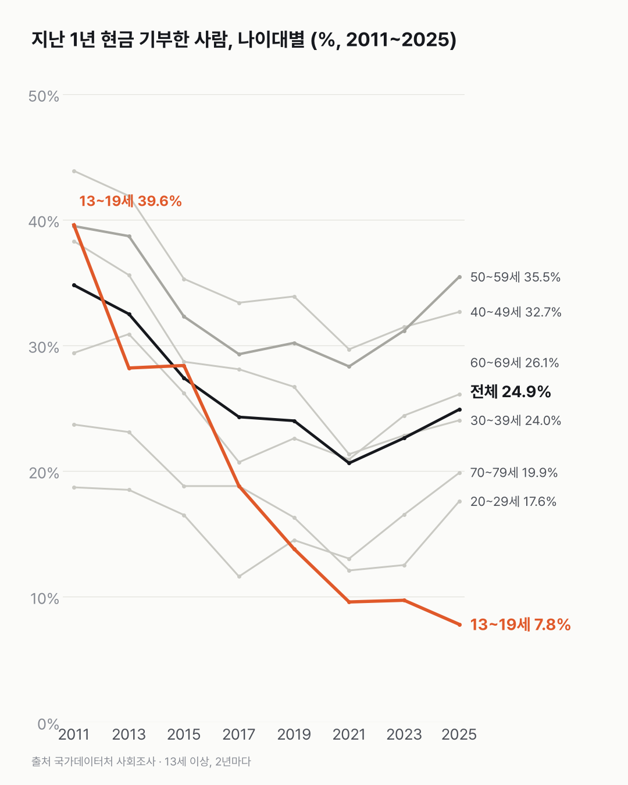
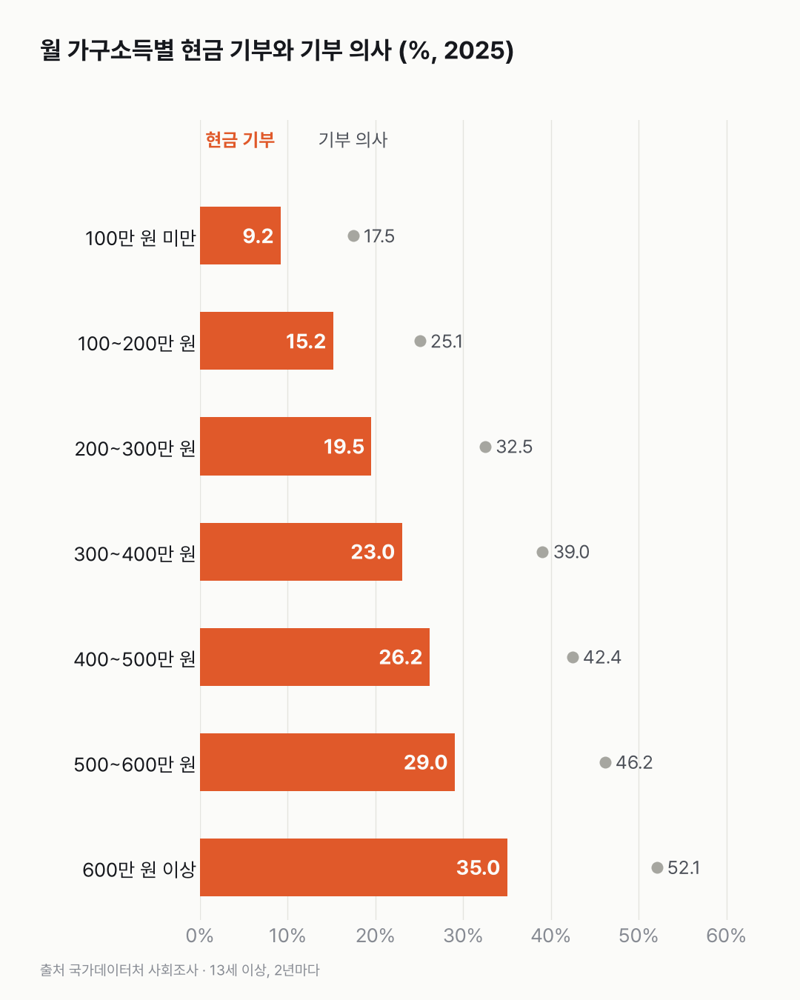

현금으로 기부하는 사람, 줄다가 다시 조금 늘었어요
현금 기부는 2021년까지 줄었다가 조금 돌아왔어요. 가구소득이 높을수록 기부한 사람이 많아요.

3줄 요약
- 지난 1년 현금으로 기부한 사람은 2011년 34.8%에서 2021년 20.6%까지 줄었다가 2025년 24.9%가 됐어요.
- 가장 많이 줄어든 건 13~19세예요. 39.6%에서 7.8%가 됐어요.
- 2025년 가구소득이 월 100만 원 미만이면 9.2%, 600만 원 이상이면 35.0%가 기부했어요.
연말이면 길에 빨간 자선냄비가 서고, 휴대폰으로 몇천 원을 보내 달라는 모금 문자도 와요. 그런 것도 다 들어가는지 조사 정의부터 찾아봤어요. 방식과 상관없이 한 번이라도 현금으로 냈으면 들어가고, 물품 기부나 자원봉사는 빠져요.
2025년엔 50대(35.5%)가 가장 많이 기부했어요. 2011년엔 40대(43.9%)가 가장 높았어요. 13~19세는 2021년 뒤에도 계속 줄어든 유일한 나이대예요.
최근 오른 나이대도 있어요. 20대는 2021년 12.1%에서 2025년 17.6%, 70~79세는 13.0%에서 19.9%가 됐어요.
가구소득에 따라 기부할 생각도 같은 쪽으로 갈렸어요. 앞으로 기부할 생각이 있다는 사람이 가장 낮은 소득 구간에서 17.5%, 가장 높은 구간에서 52.1%예요.

앞으로 1년 안에 기부할 생각이 있다는 사람은 39.6%예요. 13~19세의 2011년 현금 기부 비율과 소수점까지 같아서 두 번 봤어요. 지난 1년 실제로 기부한 사람(현금·물품 26.1%)보다는 많아요. 생각과 실제 사이에서 무엇이 멈추게 하는지는 이 조사에 없었어요.
이 숫자는 어디서 왔나요
출처
어떻게 셌나요
- 13세 이상에게 2년마다 묻는 설문조사예요.
- 현금기부는 방식(직접·모금단체·종교단체·직장 등)과 상관없이 지난 1년 동안 한 번이라도 현금으로 기부한 사람이에요. 물품 기부와 자원봉사는 넣지 않았어요.
- 기부 방식은 여러 개를 고를 수 있어서, 방식끼리 더하지 않았어요.
- 가구소득 구간은 그해 금액 그대로라, 해가 다르면 같은 구간이어도 실제 형편이 달라요. 그래서 소득 비교는 같은 해 안에서만 했어요.
- 믿기 어렵다고 표시된 칸(*)은 없었어요.
한계 4가지
이 데이터로 말할 수 없는 것
- 기부했는지만 봐요. 금액·횟수는 다른 표(현금기부 금액·횟수)에 있고 여기선 쓰지 않았어요.
- 13~19세가 줄어든 이유는 이 표로 알 수 없어요. 학교를 통한 모금 방식 변화 등은 확인하지 못했어요.
- 가구소득은 응답자가 속한 가구의 소득이에요. 기부한 사람 본인의 소득은 아니에요.
- 기부를 권하는 글은 아니에요. 원인도 말하지 않아요.
새 글 나오면 받아 보기
피드 리더 앱에 이 사이트 주소를 한 번 넣어 두면, 새 글이 올라올 때 앱에 떠요. 가입이나 메일 주소는 필요 없어요.
받는 법 보기
- 피드 리더 앱을 하나 골라요. 새 글을 모아 보여 주는 앱이에요. 예를 들면 Feedly나 Inoreader가 있어요. 둘 다 무료고 웹·휴대폰에서 써요.
- 앱에서 '구독 추가'(+)를 누르고 아래 주소를 붙여 넣어요.
- 끝이에요. 새 글이 올라오면 앱 목록에 떠요.
https://protofu.github.io/opendata-insight/feed.xmlFeedly를 쓴다면 여기를 눌러 바로 추가할 수도 있어요.